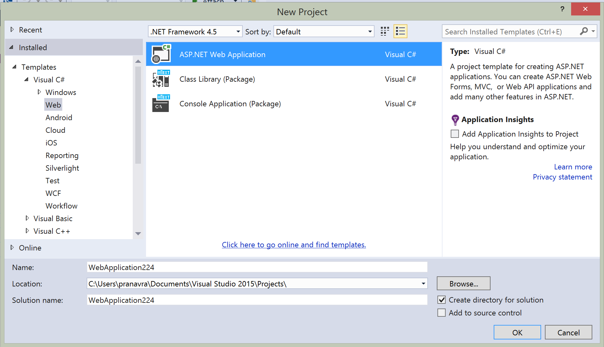
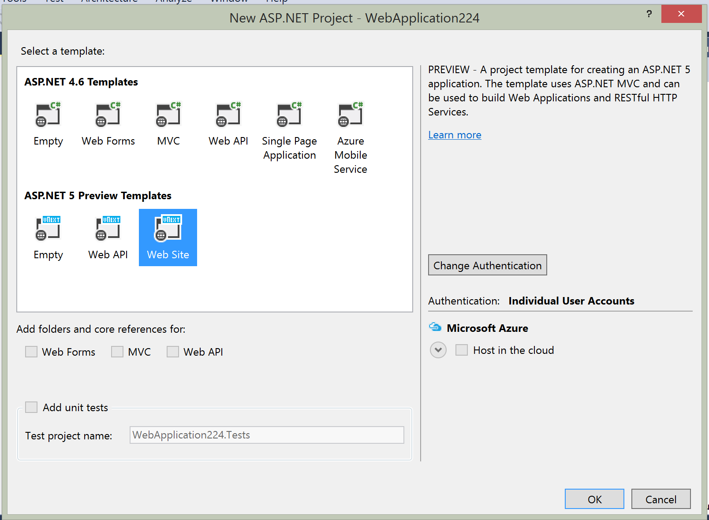
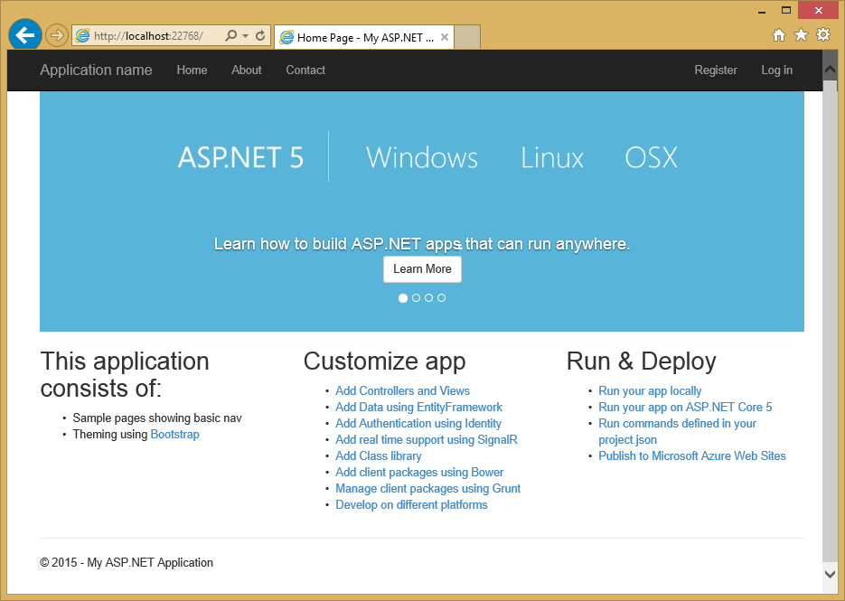

Enabling authentication using external providers¶
This tutorial shows you how to build an ASP.NET 5 Web application that enables users to log in using OAuth 2.0 with credentials from an external authentication provider, such as Facebook, Twitter, LinkedIn, Microsoft, or Google. For simplicity, this tutorial focuses on working with credentials from Facebook and Google.
Enabling these credentials in your web sites provides a significant advantage because millions of users already have accounts with these external providers. These users may be more inclined to sign up for your site if they do not have to create and remember a new set of credentials.
- In this article:
Create a New ASP.NET 5 Project¶
To get started, open Visual Studio 2015. Next, create a New Project (from the Start Page, or via File - New - Project). On the left part of the New Project window, make sure the Visual C# templates are open and “Web” is selected, as shown:
Next you should see another dialog, the New ASP.NET Project window:
Select the ASP.NET 5 Web site template from the set of ASP.NET 5 templates. Make sure you have Individual Authentication selected for this template. After selecting, click OK.
At this point, the project is created. It may take a few moments to load, and you may notice Visual Studio’s status bar indicates that Visual Studio is downloading some resources as part of this process. Visual Studio ensures some required files are pulled into the project when a solution is opened (or a new project is created), and other files may be pulled in at compile time.
Running the Application¶
Run the application and after a quick build step, you should see it open in your web browser.
Creating the app in Facebook¶
For Facebook OAuth2 authentication, you need to copy to your project some settings from an application that you create in Facebook.
- In your browser, navigate to https://developers.facebook.com/apps and log in by entering your Facebook credentials.
- If you aren’t already registered as a Facebook developer, click Register as a Developer and follow the directions to register.
- On the Apps tab, click Create New App.
- Select Website from the platform choices.
- Click Skip and Create App ID
- Set a display name and choose a Category.

- Select Settings from the left menu bar.

- On the Basic settings section of the page select Add Platform to specify that you are adding a website application.

- Select Website from the platform choices.
- Add your Site URL (http://localhost:port/)
- Make a note of your App ID and your App Secret so that you can add both into your ASP.NET 5 Web site later in this tutorial. Also, Add your Site URL (https://localhost:44300/) to test your application.
Use SecretManager to store Facebook AppId and AppSecret¶
The project created has the following code in Startup which reads the configuration values from a secret store. As a best practice, it is not recommended to store the secrets in a configuration file in the application since they can be checked into source control which may be publicly accessible.
Follow these steps to add the Facebook AppId and AppSecret to the Secret Manager:
- Open a Command Prompt and navigate to the folder of project.json for your project.
- Use DNVM (.NET Version Manager) to set a runtime version by running dnvm use 1.0.0-beta5
- Install the SecretManager tool using DNU (Microsoft .NET Development Utility) by running dnu commands install SecretManager
- Set the Facebook AppId by running user-secret set Authentication:Facebook:AppId 862373430475128
- Set the Facebook AppSecret by running user-secret set Authentication:Facebook:AppSecret 862373430475128
- The following code in the template reads the configuration values from the SecretManager. To learn more about SecretManager see Secret Manager
var configuration = new Configuration()
.AddJsonFile("config.json")
.AddJsonFile($"config.{env.EnvironmentName}.json", optional: true);
if (env.IsEnvironment("Development"))
{
// This reads the configuration keys from the secret store.
// For more details on using the user secret store see http://go.microsoft.com/fwlink/?LinkID=532709
configuration.AddUserSecrets();
}
Enable Facebook middleware¶
- You can add the options for Facebook middleware such as Facebook AppId and AppSecret in the ConfigureServices method in Startup.
services.Configure<FacebookAuthenticationOptions>(options =>
{
options.AppId = Configuration["Authentication:Facebook:AppId"];
options.AppSecret = Configuration["Authentication:Facebook:AppSecret"];
});
- Add the Facebook middleware by adding it to the HTTP request pipeline by uncommenting the following line in the Configure method in Startup.
app.UseFacebookAuthentication();
Login with Facebook¶
- Run your application and click Login. You will see an option for Facebook.
- When you click on Facebook, you will be redirected to Facebook for authentication.
- Once you enter your Facebook credentials, then you will be redirected back to the Web site where you can set your email.
- You are now logged in using your Facebook credentials.
Optionally set password¶
When you authenticate with External Login providers, then you do not have to set a password locally on the Web site. This is useful since you do not have to create an extra password that you have to remember and maintain. However sometimes you might want to create a password and login using your email that you set during the login process with external providers. To set the password once you have logged in with an external provider:
- Click the Hello raspranav@gmail.com at the top right corner to navigate to the Manage view.
- Click Create next to the Password text.
- Set a valid password and you can use this to login with your email.
Next steps¶
- This article showed how you can authenticate with Facebook. You can follow a similar approach to authenticate with Microsoft Account, Twitter, Google and other providers.
- Once you publish your Web site to Azure Web App, you should reset the AppSecret in the Facebook developer portal.
- Set the Facebook AppId and AppSecret as application setting in the Azure Web App portal. The configuration system is setup to read keys from environment variables.
Summary¶
ASP.NET Identity and Security middleware can be used to authenticate with external providers.